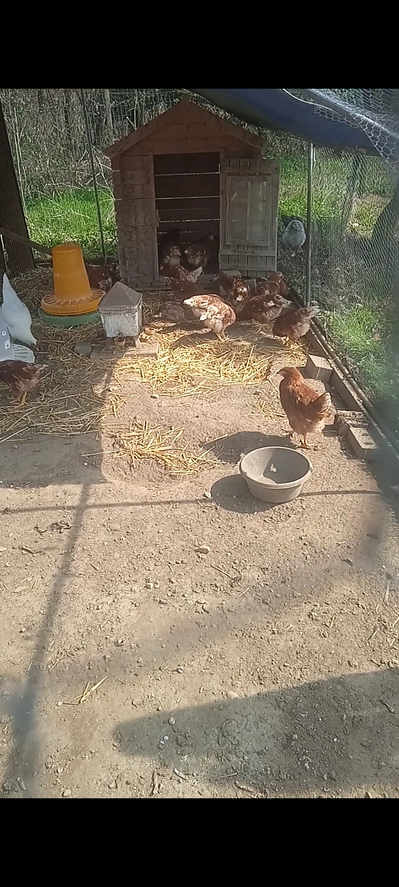

Uova fresche direttamente dal nostro pollaio
Benvenuti a Il Pollaio di Alessandro, un piccolo allevamento situato a Revislate, nel comune di Gattico-Veruno (Novara). Offriamo uova fresche da produzione locale, con attenzione alla qualità e al benessere degli animali.
Prodotti disponibili
Attualmente la vendita è dedicata alle uova da consumo.
Uova da consumo
Uova fresche prodotte nel nostro allevamento, ideali per privati e famiglie. Contattaci per disponibilità, ritiro e informazioni.
- Confezioni da 6 uova
- Confezioni da 10 uova
- Vendita a quantità su richiesta
Chi siamo
Il Pollaio di Alessandro nasce con l’idea di offrire un prodotto semplice, genuino e diretto. Un’attività locale, vicina al territorio, con attenzione alla qualità e al rapporto diretto con chi acquista.
Punti di forza
- Produzione locale
- Contatto diretto con l’allevatore
- Ordini semplici via WhatsApp
- Sito pronto a crescere con nuovi prodotti
Zona
Revislate – Gattico-Veruno (NO)
Provincia di Novara
Prossimamente
Il sito è già predisposto per l’ampliamento dell’attività con nuove categorie.
Uova feconde
Sezione pronta da attivare quando inizierai la vendita.
Pulcini
Area dedicata ai capi di taglia piccola.
Pollastrelli
Spazio per la vendita dei capi di taglia media.
Galline in produzione
Sezione pensata per i capi di taglia grande, già pronti alla deposizione.
Contatti
Nome: Il Pollaio di Alessandro
Telefono: 334 106 7510
Zona: Revislate – Gattico-Veruno (Novara)
Apri su Google Maps